品达物流TMS项目
第6章 数据聚合服务开发(pd-aggregation)
1. Canal概述
canal译意为水道/管道，主要用途是基于 MySQL 数据库增量日志解析，提供增量数据订阅和消费。

1.1 背景
早期阿里巴巴因为杭州和美国双机房部署，存在跨机房同步的业务需求，实现方式主要是基于业务 trigger 获取增量变更。从 2010 年开始，业务逐步尝试数据库日志解析获取增量变更进行同步，由此衍生出了大量的数据库增量订阅和消费业务。
基于日志增量订阅和消费的业务包括
- 数据库镜像
- 数据库实时备份
- 索引构建和实时维护(拆分异构索引、倒排索引等)
- 业务 cache 刷新
- 带业务逻辑的增量数据处理
当前的 canal 支持源端 MySQL 版本包括 5.1.x , 5.5.x , 5.6.x , 5.7.x , 8.0.x
1.2 工作原理
MySQL主从复制原理
MySQL master 将数据变更写入二进制日志( binary log, 其中记录叫做二进制日志事件binary log events)
MySQL slave 将 master 的 binary log events 拷贝到它的中继日志(relay log)
MySQL slave 重放 relay log 中事件，将数据变更反映它自己的数据
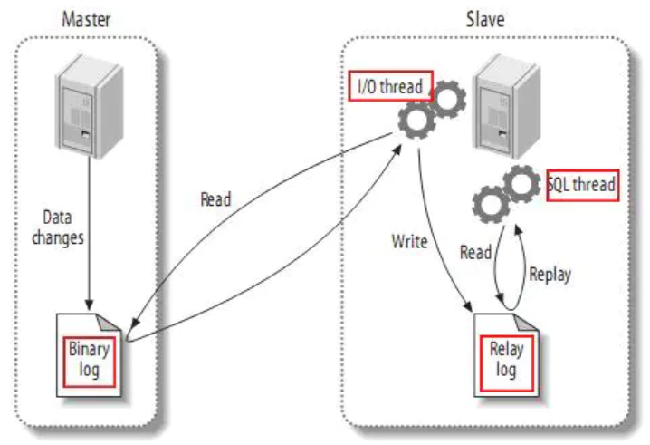
canal 工作原理
- canal 模拟 MySQL slave 的交互协议，伪装自己为 MySQL slave ，向 MySQL master 发送dump 协议
- MySQL master 收到 dump 请求，开始推送 binary log 给 slave (即 canal )
- canal 解析 binary log 对象(原始为 byte 流)
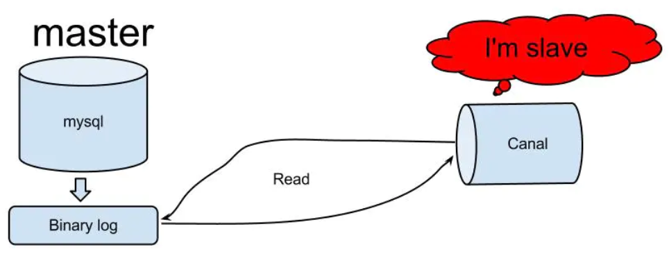
1.3 架构
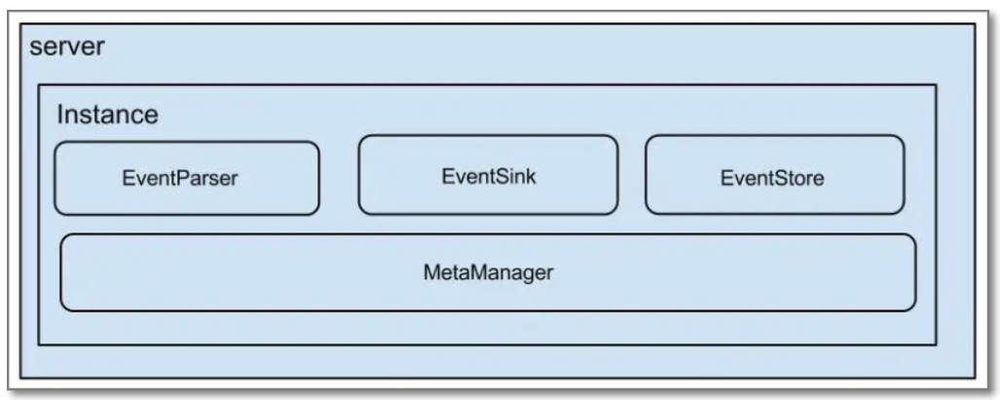
说明：
- server 代表一个canal服务，管理多个instance
- instance 伪装成一个slave,从mysql dump数据
instance模块：
- eventParser (数据源接入，模拟slave协议和master进行交互，协议解析)
- eventSink (Parser和Store链接器，进行数据过滤，加工，分发的工作)
- eventStore (数据存储)
- metaManager (增量订阅&消费信息管理器)
1.4 HA机制设计
canal的高可用HA(High Availability)
- 为了减少对mysql dump的请求，要求同一时间只能有一个处于running，其他的处于standby状态
如下图所示:
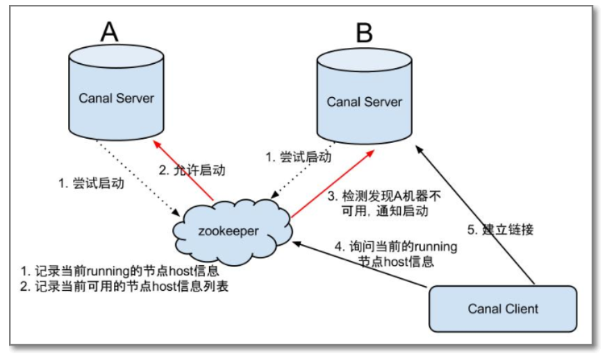
大致步骤：
- canal server要启动某个canal instance时都先向zookeeper进行一次尝试启动判断 (实现：创建短暂的节点，谁创建成功就允许谁启动)
- 创建zookeeper节点成功后，对应的canal server就启动对应的canal instance，没有创建成功的canal instance就会处于备用状态
- 一旦zookeeper发现canal server A创建的节点消失后，立即通知其他的canal server再次进行步骤1的操作，重新选出一个canal server启动instance.
- canal client每次进行连接时，会首先向zookeeper询问当前是谁启动了canal instance，然后和其建立链接，一旦链接不可用，会重新尝试connect
1.5 canal安装
- 创建mysql容器
docker run -id --name canal_mysql \-v /mnt/canal_mysql:/var/lib/mysql \-p 3306:3306 \-e MYSQL_ROOT_PASSWORD=123456 mysql:5.7- 安装vim
需要在MySQL容器中修改配置文件，但是容器中默认没有vim命令，需要进行安装。
直接执行命令安装vim速度会很慢，因为使用的是国外的源，需要更新Debian源以提高速度。
x#在宿主机创建sources.list配置文件vi sources.list#内容为：deb http://mirrors.tuna.tsinghua.edu.cn/debian/ buster maindeb http://mirrors.tuna.tsinghua.edu.cn/debian-security buster/updates maindeb http://mirrors.tuna.tsinghua.edu.cn/debian/ buster-updates main#复制宿主机的配置到MySQL容器中docker cp sources.list canal_mysql:/etc/apt/#进入MySQL容器docker exec -it canal_mysql /bin/bash#执行安装命令apt-get update && apt-get install vim -y
- 修改MySQL配置
需要让canal伪装成salve并正确获取mysql中的binary log，首先要开启 Binlog 写入功能，配置 binlog-format 为 ROW 模式，命令如下：
xxxxxxxxxx#修改MySQL配置文件vim /etc/mysql/mysql.conf.d/mysqld.cnf#添加的内容如下：log-bin=mysql-binbinlog-format=ROWserver_id=1#开启binlog 选择ROW模式 #server_id不要和canal的slaveId重复- 重启MySQL
xxxxxxxxxxdocker restart canal_mysql远程登录MySQL，查看配置状态，执行以下sql：
xxxxxxxxxxshow variables like 'log_bin';show variables like 'binlog_format';show master status;- 创建Canal账号
创建连接MySQL的账号canal并授予作为 MySQL slave 的权限，执行以下sql：
xxxxxxxxxx# 创建账号CREATE USER canal IDENTIFIED BY 'canal'; # 授予权限GRANT SELECT, REPLICATION SLAVE, REPLICATION CLIENT ON *.* TO 'canal'@'%';# 刷新并应用FLUSH PRIVILEGES;- 创建canal-server容器
xxxxxxxxxxdocker run -d --name canal-server \-p 11111:11111 canal/canal-server:v1.1.4- 配置canal-server
xxxxxxxxxx#进入canal-server容器docker exec -it canal-server /bin/bash#编辑canal-server的配置vi canal-server/conf/example/instance.properties
内容如下：
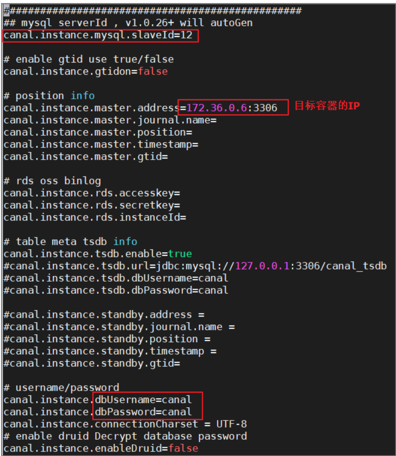
- 重启canal-server
修改完成后重启canal-server，并查看日志：
xxxxxxxxxx#按ctrl+D退出容器，并重启容器docker restart canal-server#重启成功后进入容器docker exec -it canal-server /bin/bash#查看日志tail -100f canal-server/logs/example/example.log1.6 简单使用
在数据库服务中创建数据库canal_test并创建表：
xxxxxxxxxxCREATE TABLE `student` ( `id` varchar(20) NOT NULL, `name` varchar(50) DEFAULT NULL, `age` int(11) DEFAULT NULL, `sex` varchar(5) DEFAULT NULL, `city` varchar(20) DEFAULT NULL, PRIMARY KEY (`id`)) ENGINE=InnoDB DEFAULT CHARSET=utf8;
创建Maven工程canal-demo，在pom.xml中添加依赖：
xxxxxxxxxx<dependencies> <dependency> <groupId>com.alibaba.otter</groupId> <artifactId>canal.client</artifactId> <version>1.1.4</version> </dependency></dependencies>
编写代码获取canal数据：
xxxxxxxxxximport com.alibaba.otter.canal.client.CanalConnector;import com.alibaba.otter.canal.client.CanalConnectors;import com.alibaba.otter.canal.protocol.CanalEntry.Entry;import com.alibaba.otter.canal.protocol.CanalEntry.EntryType;import com.alibaba.otter.canal.protocol.CanalEntry.RowChange;import com.alibaba.otter.canal.protocol.CanalEntry.RowData;import com.alibaba.otter.canal.protocol.Message;import java.net.InetSocketAddress;import java.util.List;import java.util.concurrent.TimeUnit;public class CanalTest { public static void main(String[] args) { String ip = "39.98.107.235"; String destination = "example"; //创建连接对象 CanalConnector canalConnector = CanalConnectors.newSingleConnector( new InetSocketAddress(ip, 11111), destination, "", "" ); //进行连接 canalConnector.connect(); //进行订阅 canalConnector.subscribe(); int batchSize = 5 * 1024; //使用死循环不断的获取canal信息 while (true) { //获取Message对象 Message message = canalConnector.getWithoutAck(batchSize); long id = message.getId(); int size = message.getEntries().size(); System.out.println("当前监控到的binLog消息数量是：" + size); //判断是否有数据 if (id == -1 || size == 0) { //如果没有数据，等待1秒 try { TimeUnit.SECONDS.sleep(1); } catch (InterruptedException e) { e.printStackTrace(); } } else { //如果有数据，进行数据解析 List<Entry> entries = message.getEntries(); //遍历获取到的Entry集合 for (Entry entry : entries) { System.out.println("----------------------------------------"); System.out.println("当前的二进制日志的条目（entry）类型是：" + entry.getEntryType()); //如果属于原始数据ROWDATA，进行打印内容 if (entry.getEntryType() == EntryType.ROWDATA) { try { //获取存储的内容 RowChange rowChange = RowChange.parseFrom(entry.getStoreValue()); //打印事件的类型，增删改查哪种 eventType System.out.println("事件类型是：" + rowChange.getEventType()); //打印改变的内容(增量数据) for (RowData rowData : rowChange.getRowDatasList()) { System.out.println("改变前的数据：" + rowData.getBeforeColumnsList()); System.out.println("改变后的数据：" + rowData.getAfterColumnsList()); } } catch (Exception e) { e.printStackTrace(); } } } //消息确认已经处理了 canalConnector.ack(id); } } }}
数据对象格式：
xxxxxxxxxxEntryHeaderversion [协议的版本号,default = 1]logfileName [binlog文件名]logfileOffset [binlog position]serverId [服务端serverId]serverenCode [变更数据的编码]executeTime [变更数据的执行时间]sourceType [变更数据的来源,default = MYSQL]schemaName [变更数据的schemaname]tableName [变更数据的tablename]eventLength [每个event的长度]eventType [insert/update/delete类型,default = UPDATE]props [预留扩展]gtid [当前事务的gitd]entryType [事务头BEGIN/事务尾END/数据ROWDATA/HEARTBEAT/GTIDLOG]storeValue [byte数据,可展开，对应的类型为RowChange]RowChangetableId [tableId,由数据库产生]eventType [数据变更类型,default = UPDATE]isDdl [标识是否是ddl语句，比如create table/drop table]sql [ddl/query的sql语句]rowDatas [insert/update/delete的变更数据，可为多条，event可对应多条变更，如批处理]beforeColumns [字段信息，增量数据(修改前,删除前),Column类型的数组]afterColumns [字段信息，增量数据(修改后,新增后),Column类型的数组]props [预留扩展]props [预留扩展]ddlSchemaName [ddl/query的schemaName，会存在跨库ddl，需要保留执行ddl的当前schemaName]Columnindex [字段下标]sqlType [jdbc type]name [字段名称(忽略大小写)，在mysql中是没有的]isKey [是否为主键]updated [是否发生过变更]isNull [值是否为null]props [预留扩展]value [字段值,timestamp,Datetime是一个时间格式的文本]length [对应数据对象原始长度]mysqlType [字段mysql类型]
2. Otter概述
2.1 介绍
Otter底层依赖Canal接收和解析mysql binlog日志，提供了可配置化的同步机制，纯java开发，免费开源的，基于数据库增量日志解析，准实时同步到本机房或异地机房的mysql/oracle数据库，是一个分布式数据同步系统。
典型的应用场景：
- 异构库同步
a. mysql -> mysql/oracle. (目前开源版只支持mysql增量,目标库可以是mysql或oracle,取决于canal的功能)
- 单机房同步 (数据库之间RTT < 1ms, RTT: 往返延迟)
a. 数据库版本升级
b. 数据表迁移
c. 异步二级索引
- 异地机房同步 (比如阿里巴巴国际站就是杭州和美国机房的数据库同步，RTT > 200ms)
a. 机房容灾
- 双向同步
a. 避免回环算法 (通用的解决方案，支持大部分关系型数据库)
b. 数据一致性算法 (保证双A机房模式下，数据保证最终一致性)
- 文件同步
a. 站点镜像 (进行数据复制的同时，复制关联的图片，比如复制产品数据，同时复制产品图片).
例如： 账户信息表和账户交易明细表，更新账户余额后需要登记一条账户明细，用户可以通过交易明细表查看交易记录，但是交易明细表的数据量是逐步递增的，用户量多的系统，几个月下来的数据超过千万了，表数据量一多就导致查询和插入变慢，通过otter可以将记录同步到历史表，并且进行分表处理，用户往年的交易记录就可以查询历史表了，而原交易明细表就可以删除一个月甚至几天前的数据；
2.2 架构
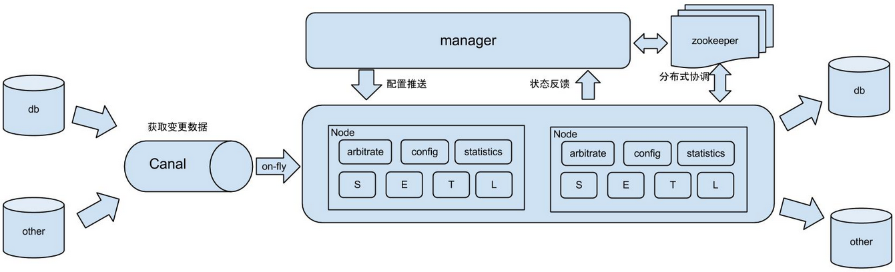
说明：
- db : 数据源以及需要同步到的库
- Canal : 获取数据库增量日志，canal支持独立部署和内嵌使用两种模式。otter使用canal的内嵌方法获取数据库增量日志
- manager : 配置同步规则设置数据源同步源等
- zookeeper : 协调node进行协调工作
- node : 负责任务处理，即根据任务配置对数据源进行解析并同步到目标数据库的操作。
原理描述：
基于Canal的开源产品，获取数据库增量日志数据。典型管理系统架构：manager(web管理)+node(工作节点)
- manager运行时推送同步配置到node节点
- node节点将同步状态反馈到manager上
- 基于zookeeper，解决分布式状态调度的，允许多node节点之间协同工作
单机房复制示意图：

说明：
- 数据on-Fly，尽可能不落地，更快的进行数据同步.
- node节点可以有failover / loadBalancer.
跨机房复制示意图：
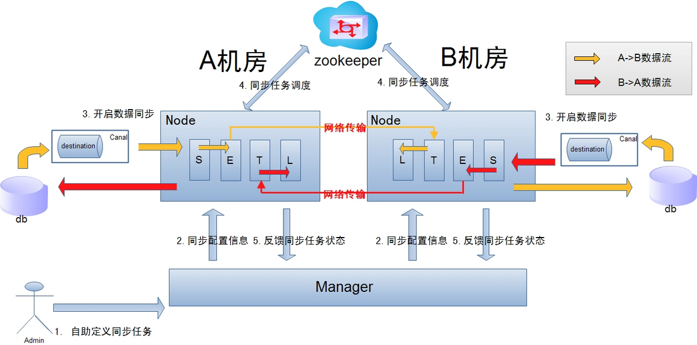
说明：
- 数据涉及网络传输，S/E/T/L几个阶段会分散在2个或者更多Node节点上，多个Node之间通过zookeeper进行协同工作 (一般是Select和Extract在一个机房的Node，Transform/Load落在另一个机房的Node)
- node节点可以有failover / loadBalancer. (每个机房的Node节点，都可以是集群，一台或者多台机器)
3. Otter安装配置
3.1 依赖环境安装
环境使用： CentOS 7.6
3.1.1 jdk安装
安装：
xxxxxxxxxx# 解压命令tar -zxf jdk-8u191-linux-x64.tar.gz -C /usr/local/# 修改配置命令vi /etc/profile# 添加内容：export JAVA_HOME=/usr/local/jdk1.8.0_191export PATH=$JAVA_HOME/bin:$PATH# 配置生效命令source /etc/profile#查看java版本命令java -version3.1.2 docker安装
卸载旧版本:
xxxxxxxxxxyum remove docker \docker-client \docker-client-latest \docker-common \docker-latest \docker-latest-logrotate \docker-logrotate \docker-engine使用 Docker 仓库进行安装,设置仓库:
xxxxxxxxxxyum install -y yum-utils \device-mapper-persistent-data lvm2设置稳定的仓库:
xxxxxxxxxxyum-config-manager --add-repo \https://download.docker.com/linux/centos/docker-ce.repo安装Docker:
xxxxxxxxxx#安装yum install docker-ce docker-ce-cli containerd.io#启动systemctl start docker#设置开机启动systemctl enable docker#安装好后，可以查看docker的版本docker -v3.2 MySQL安装
使用otter进行数据同步时，有三类数据库：
- 源数据库
- 目标数据库
- otter配置数据库
3.2.1 创建源数据库
在两个服务器上分别创建两个数据库，一个作为源库，一个作为目标库。
在服务器A上，使用docker创建otter的源库
xxxxxxxxxxcd /mnt#创建目录，用于存放MySQL源库所需配置文件和数据，后续启动MySQL容器时需要进行目录映射mkdir mysql_srccd mysql_src#conf目录用于存放MySQL数据库配置文件，data用于存放数据mkdir conf datacd conf#创建MySQL数据库配置文件vim docker.cnf#文件内容[mysqld] server_id=1character-set-server=utf8collation-server=utf8_general_cibinlog_format=rowlog-bin=mysql-binsql_mode='ONLY_FULL_GROUP_BY,NO_AUTO_VALUE_ON_ZERO,STRICT_TRANS_TABLES,ERROR_FOR_DIVISION_BY_ZERO,NO_AUTO_CREATE_USER,NO_ENGINE_SUBSTITUTION'#启动MySQL容器docker run -id --name otter_mysql1 \-v /mnt/mysql_src/data:/var/lib/mysql \-v /mnt/mysql_src/conf:/etc/mysql/conf.d \-p 3306:3306 \-e MYSQL_ROOT_PASSWORD=123456 mysql:5.73.2.2 创建目标数据库
在服务器B上，使用docker创建otter的目标库，同时也作为otter的配置数据库
xxxxxxxxxxcd /mnt#创建目录，用于存放MySQL目标库所需配置文件和数据，后续启动MySQL容器时需要进行目录映射mkdir mysql_destcd mysql_dest#conf目录用于存放MySQL数据库配置文件，data用于存放数据mkdir conf datacd conf#创建MySQL数据库配置文件vim docker.cnf#文件内容[mysqld] server_id=2character-set-server=utf8collation-server=utf8_general_cibinlog_format=rowlog-bin=mysql-binsql_mode='ONLY_FULL_GROUP_BY,NO_AUTO_VALUE_ON_ZERO,STRICT_TRANS_TABLES,ERROR_FOR_DIVISION_BY_ZERO,NO_AUTO_CREATE_USER,NO_ENGINE_SUBSTITUTION'#启动MySQL容器docker run -id --name otter_mysql2 \-v /mnt/mysql_dest/data:/var/lib/mysql \-v /mnt/mysql_dest/conf:/etc/mysql/conf.d \-p 3306:3306 \-e MYSQL_ROOT_PASSWORD=123456 mysql:5.7
mysql源数据库的binlog必须配置成row，才能够进行数据同步：
xxxxxxxxxx-- 必须开启log-bin二进制日志show variables like 'log_bin';-- binlong 格式必须是row，以下命令查看当前数据库binlog方式：show variables like 'binlog_format';-- 必须有server_id,该参数跟数据库复制有关，详情看官网show variables like 'server_id';-- 字符集character_set_server 必须是utf8,否则配置数据源表验证不通过。show variables like 'character_set_server';3.2.3 初始化Otter配置数据库
xxxxxxxxxxcd /mnt#创建目录，用于存放MySQL目标库所需配置文件和数据，后续启动MySQL容器时需要进行目录映射mkdir mysql_ottercd mysql_otter#conf目录用于存放MySQL数据库配置文件，data用于存放数据mkdir conf datacd conf#创建MySQL数据库配置文件vim docker.cnf#文件内容[mysqld] server_id=3character-set-server=utf8collation-server=utf8_general_cibinlog_format=rowlog-bin=mysql-binsql_mode='ONLY_FULL_GROUP_BY,NO_AUTO_VALUE_ON_ZERO,STRICT_TRANS_TABLES,ERROR_FOR_DIVISION_BY_ZERO,NO_AUTO_CREATE_USER,NO_ENGINE_SUBSTITUTION'#启动MySQL容器docker run -id --name otter_mysql \-v /mnt/mysql_otter/data:/var/lib/mysql \-v /mnt/mysql_otter/conf:/etc/mysql/conf.d \-p 3306:3306 \-e MYSQL_ROOT_PASSWORD=123456 mysql:5.7
在准备安装Otter的服务器的MySQL中执行以下SQL，创建名称为otter的数据库
xxxxxxxxxxcreate database otter DEFAULT CHARACTER SET utf8;CREATE USER 'canal'@'%' IDENTIFIED BY 'canal';GRANT ALL PRIVILEGES ON `otter`.* TO 'canal'@'%'; flush PRIVILEGES;在otter数据库中创建表
xxxxxxxxxx# 下载otter数据库文件wget https://github.com/alibaba/otter/blob/master/manager/deployer/src/main/resources/sql/otter-manager-schema.sql# 在mysql命令行中执行sql脚本进行建表source /opt/otter/manager/otter-manager-schema.sql;3.3 zookeeper安装
3.3.1 单机版安装
xxxxxxxxxx#启动容器：docker run -id --name my_zookeeper -p 2181:2181 zookeeper:3.4.14#查看容器运行情况：docker logs -f my_zookeeper使用客户端连接zookeeper：
xxxxxxxxxxdocker run -it --rm --link my_zookeeper:zk zookeeper:3.4.14 zkCli.sh -server zk3.3.2 集群版安装
一个一个的启动 ZK 很麻烦，这里直接使用 docker-compose 来启动 ZK 集群。
Docker Compose安装：
下载 Docker Compose 的当前稳定版本：
xxxxxxxxxx#安装pipyum -y install epel-release python-pip#升级pippip install --upgrade pip pip install --upgrade setuptools --upgrade requests#查看pip版本pip -V#使用pip安装Docker Composepip install docker-compose测试是否安装成功：
xxxxxxxxxxdocker-compose --version删除docker-compose
xxxxxxxxxxpip uninstall docker-compose -y首先创建一个名为 docker-compose.yml 的文件：
xxxxxxxxxxmkdir ~/zk_clustercd ~/zk_clustervi docker-compose.ymldocker-compose.yml 内容如下:
xxxxxxxxxxversion'3.8'services zk01 imagezookeeper3.4.14 restartalways container_namezk01 ports"2181:2181" environment ZOO_MY_ID1 ZOO_SERVERSserver.1=zk0128883888 server.2=zk0228883888 server.3=zk0328883888 zk02 imagezookeeper3.4.14 restartalways container_namezk02 ports"2182:2181" environment ZOO_MY_ID2 ZOO_SERVERSserver.1=zk0128883888 server.2=zk0228883888 server.3=zk0328883888 zk03 imagezookeeper3.4.14 restartalways container_namezk03 ports"2183:2181" environment ZOO_MY_ID3 ZOO_SERVERSserver.1=zk0128883888 server.2=zk0228883888 server.3=zk0328883888注意Compose文件的版本，需要符合以下要求：
| Compose file format | Docker Engine release |
|---|---|
| 3.8 | 19.03.0+ |
| 3.7 | 18.06.0+ |
| 3.6 | 18.02.0+ |
| 3.5 | 17.12.0+ |
| 3.4 | 17.09.0+ |
| 3.3 | 17.06.0+ |
| 3.2 | 17.04.0+ |
| 3.1 | 1.13.1+ |
| 3 | 1.13.0+ |
| 2.4 | 17.12.0+ |
| 2.3 | 17.06.0+ |
| 2.2 | 1.13.0+ |
| 2.1 | 1.12.0+ |
| 2 | 1.10.0+ |
| 1 | 1.9.1.+ |
在 docker-compose.yml 当前目录下运行命令：
xxxxxxxxxx#校验docker-compose.ymldocker-compose config#启动zookeeper集群COMPOSE_PROJECT_NAME=zk_otter docker-compose up -d查看启动的 ZK 容器，运行以下命令：
xxxxxxxxxxCOMPOSE_PROJECT_NAME=zk_otter docker-compose ps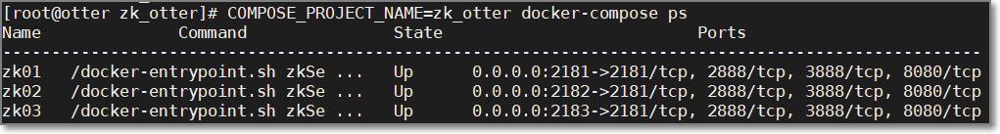
COMPOSE_PROJECT_NAME=zk_test 这个环境变量, 这是为我们的 compose 工程起一个名字, 以免与其他的 compose 混淆.
依次执行命令：
xxxxxxxxxxdocker exec zk01 /bin/bash -c 'bin/zkServer.sh status'docker exec zk02 /bin/bash -c 'bin/zkServer.sh status'docker exec zk03 /bin/bash -c 'bin/zkServer.sh status'可以看到一个主，两个从，集群搭建完成

集群连接：
查看Networks名称
xxxxxxxxxxdocker inspect -f '{{.NetworkSettings.Networks}}' zk01根据Networks名称连接集群：
xxxxxxxxxxdocker run -it --rm \ --link zk01:zk1 \ --link zk02:zk2 \ --link zk03:zk3 \ --net zk_otter_default \ zookeeper:3.4.14 zkCli.sh -server zk1:2181,zk2:2181,zk3:21813.4 aria2安装
aria2是一个多线程下载工具，运行otter需要aria2的支持
xxxxxxxxxxyum -y install epel-release aria2
3.5 Otter manager
3.5.1 安装
https://github.com/alibaba/otter/releases
xxxxxxxxxxmkdir /opt/ottercd /opt/otter# 将文件下载到/opt/otter目录wget https://github.com/alibaba/otter/releases/download/otter-4.2.18/manager.deployer-4.2.18.tar.gzwget https://github.com/alibaba/otter/releases/download/otter-4.2.18/node.deployer-4.2.18.tar.gz# 解压managermkdir managertar -zxf manager.deployer-4.2.18.tar.gz -C manager修改otter manager配置文件：
xxxxxxxxxx# 修改mysql数据库和zookeeper配置信息vim /opt/otter/manager/conf/otter.properties # 主要配置四个方面： 服务端口、数据库、zookeeper、邮箱# 其他方面使用默认配置即可 修改内容如下：## otter manager 域名/ip地址otter.domainName = {更改成服务器ip或域名}## otter manager database configotter.database.driver.class.name = com.mysql.jdbc.Driverotter.database.driver.url = jdbc:mysql://127.0.0.1:3306/otter?autoReconnect=true&useSSL=falseotter.database.driver.username = {更改成你的用户名}otter.database.driver.password = {更改成你的密码}启动otter manager：
xxxxxxxxxx/opt/otter/manager/bin/startup.sh
查看日志：
xxxxxxxxxxtail -500f /opt/otter/manager/logs/manager.log
用浏览器打开： http://{otter主机ip}:8080/
默认密码：admin/admin
3.5.2 配置
Manager启动后，需要配置zookeeper和node
3.5.2.1 配置zookeeper
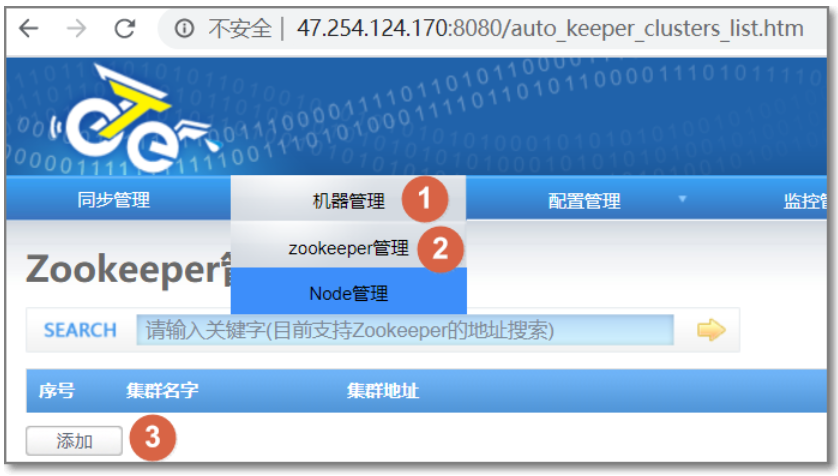
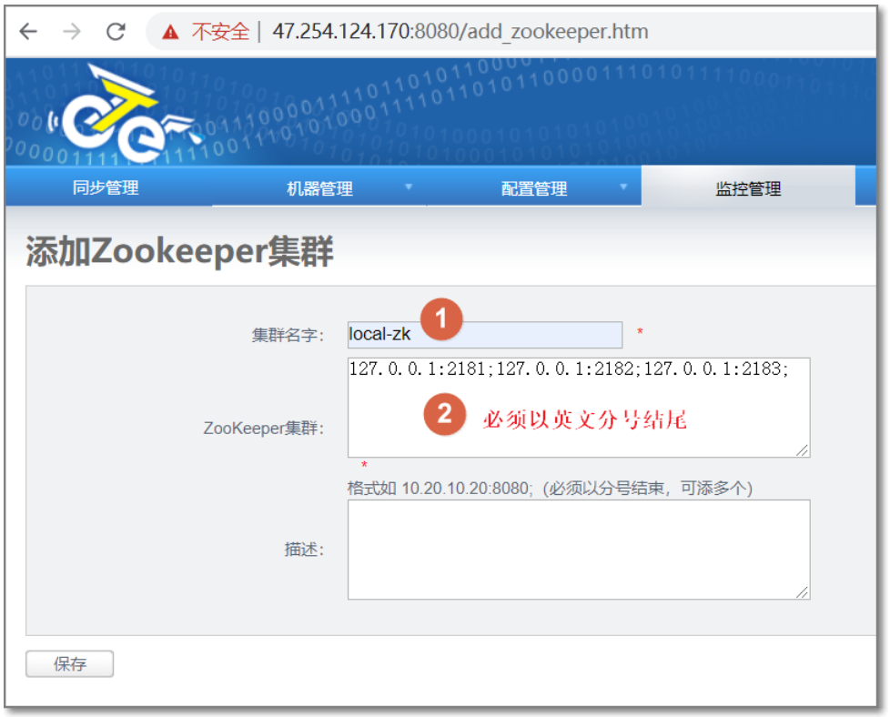
3.5.2.2 配置node
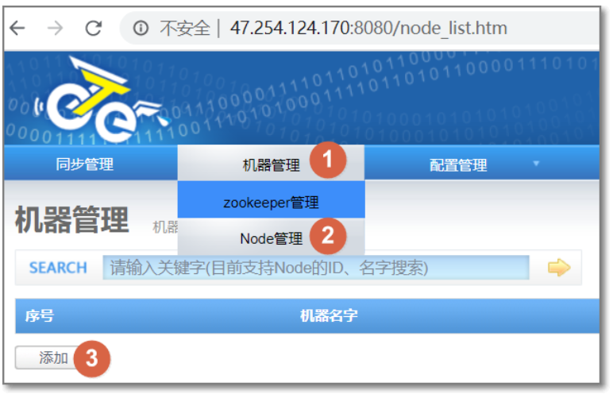
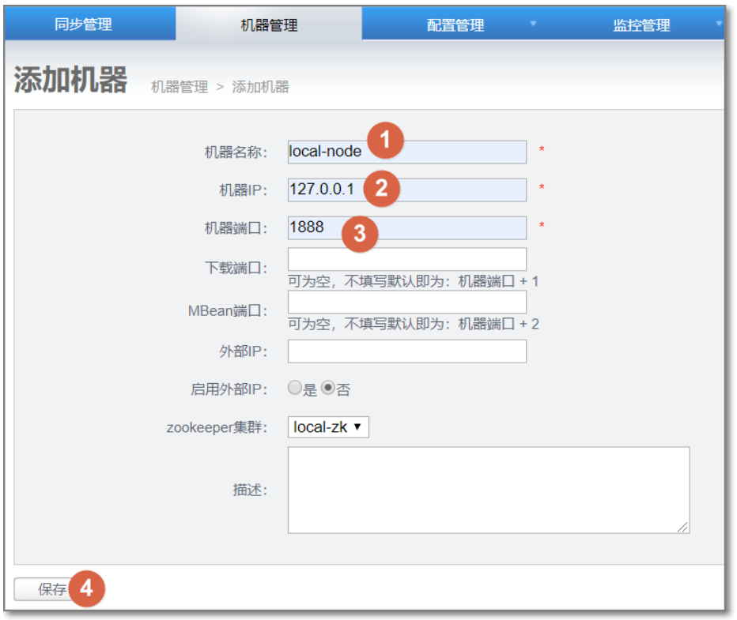
- 机器名称：可以随意定义，方便记忆即可
- 机器ip：对应node节点将要部署的机器ip，如果有多ip时，可选择其中一个ip进行暴露. (此ip是整个集群通讯的入口，实际情况千万别使用127.0.0.1，否则多个机器的node节点会无法识别)
- 机器端口：对应node节点将要部署时启动的数据通讯端口
- 下载端口：对应node节点将要部署时启动的数据下载端口
- 外部ip ：对应node节点将要部署的机器ip，存在的一个外部ip，允许通讯的时候走公网处理
- zookeeper集群：为提升通讯效率，不同机房的机器可选择就近的zookeeper集群
- node这种设计，是为解决单机部署多实例而设计的，允许单机多node指定不同的端口
端口默认即可，添加完node后，列表中第一列是nid（此id要保存到node/conf/nid文件中的值）：

3.5.3 说明
Otter Manager简化了一些admin管理上的操作成本，比如可以通过manager发布同步任务配置，接收同步任务反馈的状态信息等。
同步配置管理
- 添加数据源
- canal解析配置
- 添加数据表
- 同步任务
同步状态查询
- 查询延迟
- 查询吞吐量
- 查询同步进度
- 查询报警&异常日志
用户权限
- ADMIN : 超级管理员
- OPERATOR : 普通用户，管理某个同步任务下的同步配置，添加数据表，修改canal配置等
- ANONYMOUS : 匿名用户，只能进行同步状态查询的操作.
3.6 Otter node
xxxxxxxxxx# 解压到node目录中cd /opt/otter/mkdir nodetar -zxf node.deployer-4.2.18.tar.gz -C node/# 添加nid（在manager中添加的node节点的nid）cd /opt/otter/node/conf/echo 1 > nidnode/conf/otter.properties这个文件是node节点的配置文件，使用默认配置即可：
xxxxxxxxxx# otter node root dirotter.nodeHome = ${user.dir}/../## otter node dirotter.htdocs.dir = ${otter.nodeHome}/htdocsotter.download.dir = ${otter.nodeHome}/downloadotter.extend.dir= ${otter.nodeHome}/extend## default zookeeper sesstion timeout = 60sotter.zookeeper.sessionTimeout = 60000## otter communication payload size (default = 8388608)otter.communication.payload = 8388608## otter communication pool sizeotter.communication.pool.size = 10## otter arbitrate & node connect manager configotter.manager.address = 127.0.0.1:1099启动node：
xxxxxxxxxx/opt/otter/node/bin/startup.sh
查看日志：
xxxxxxxxxxtail -500f /opt/otter/node/logs/node/node.log
此时从manager上可以看到node节点已启动：
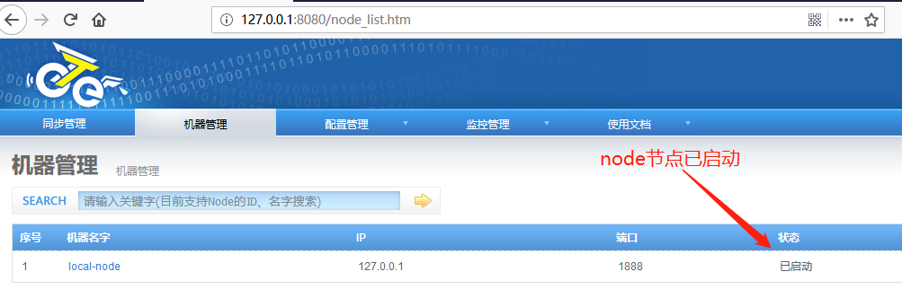
我们可以通过这种方式添加多个node节点。
此时otter manager和node节点都启动了，我们可以开始配置数据同步了。
4. 设置同步任务
在源数据库和目标数据库中都需要创建数据库otter_test，并执行以下建表语句：
xxxxxxxxxxDROP TABLE IF EXISTS `tb_item`;CREATE TABLE `tb_item` ( `id` bigint(20) NOT NULL COMMENT '商品id，同时也是商品编号', `title` varchar(100) NOT NULL COMMENT '商品标题', `sell_point` varchar(500) DEFAULT NULL COMMENT '商品卖点', `price` bigint(20) NOT NULL COMMENT '商品价格，单位为：分', `image` varchar(500) DEFAULT NULL COMMENT '商品图片', `status` tinyint(4) NOT NULL DEFAULT '1' COMMENT '商品状态，1-正常，2-下架，3-删除', `created` datetime NOT NULL COMMENT '创建时间', `updated` datetime NOT NULL COMMENT '更新时间', PRIMARY KEY (`id`)) ENGINE=InnoDB DEFAULT CHARSET=utf8 COMMENT='商品表';4.1 数据源配置
配置源数据库：
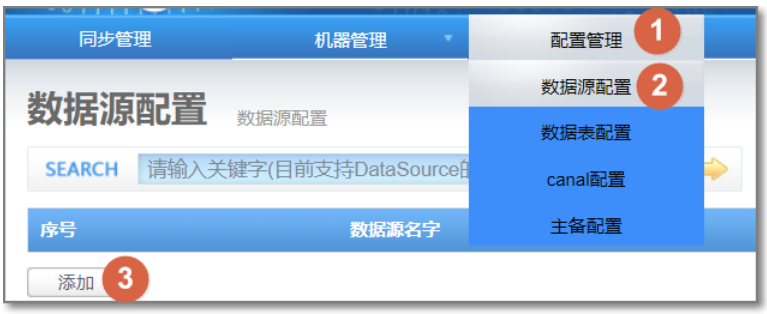
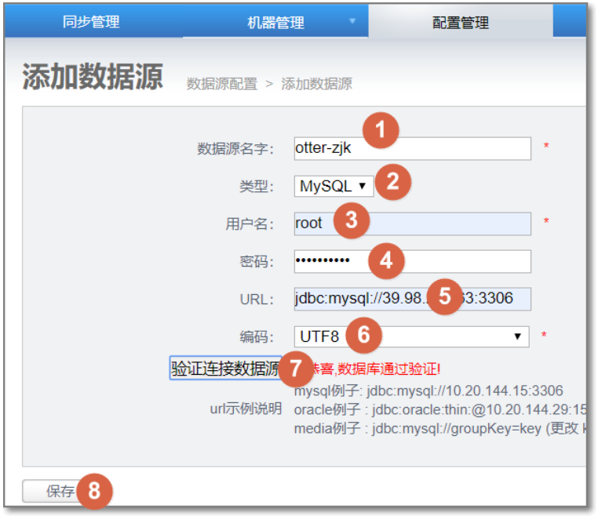
配置目标数据库：
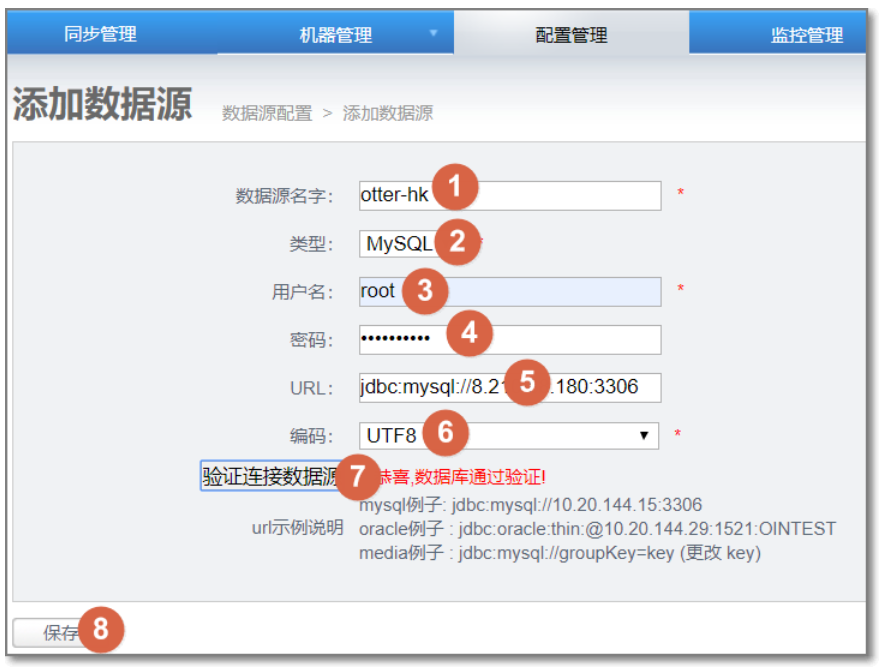
添加完成：
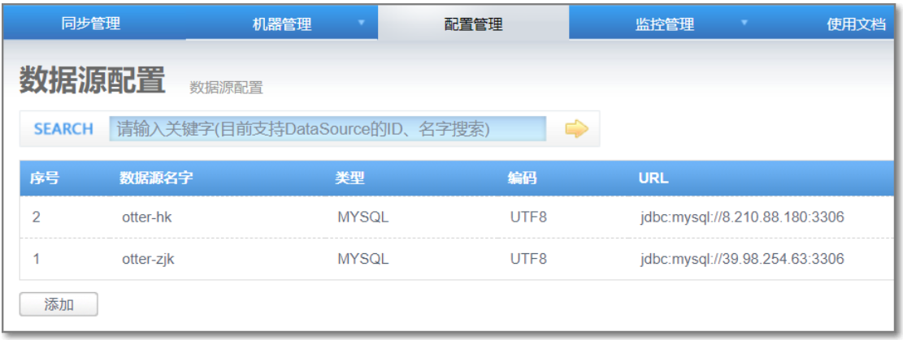
4.2 数据表配置
添加源数据库表和目标数据库表
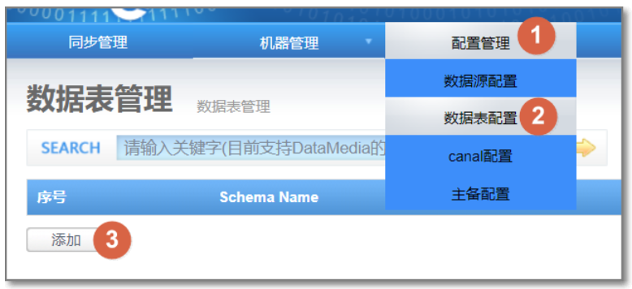
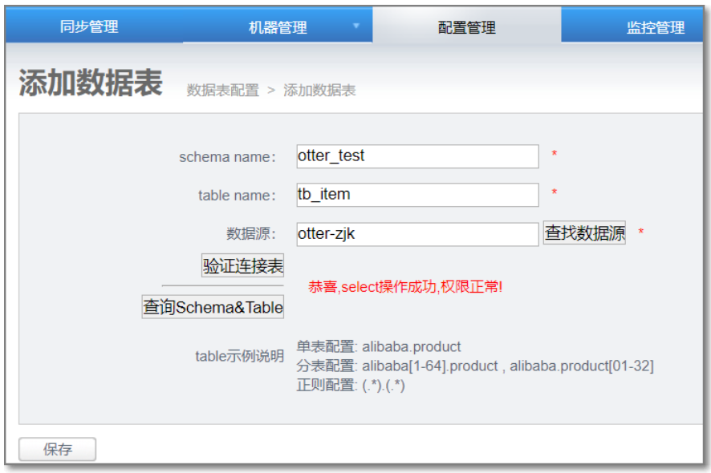
4.3 添加canal
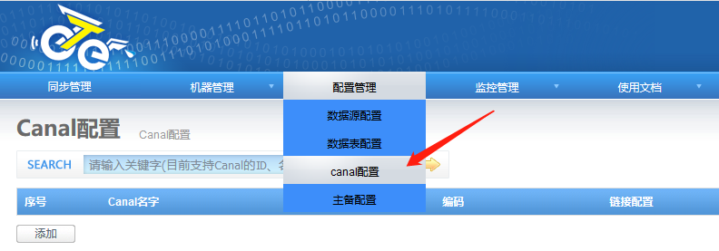
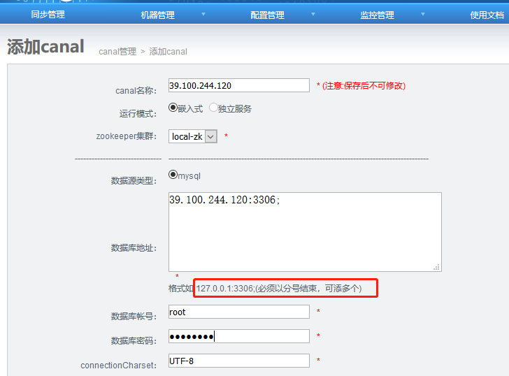
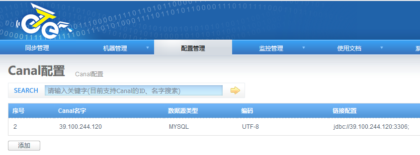
xxxxxxxxxx1. 数据库地址：指源库的ip和端口2. connectionCharset ==> 获取binlog时指定的编码3. 位点自定义设置 ==> 格式：{“journalName”:"",“position”:0,“timestamp”:0};指定位置：{“journalName”:"",“position”:0};指定时间：{“timestamp”:0};4. 内存存储batch获取模式 ==> MEMSIZE/ITEMSIZE，前者为内存控制，后者为数量控制. 针对MEMSIZE模式的内存大小计算 = 记录数 * 记录单元大小内存存储buffer记录数内存存储buffer记录单元大小5. 心跳SQL配置 ==> 可配置对应心跳SQL，如果配置 是否启用心跳HA，当心跳SQL检测失败后，canal就会自动进行主备切换.
4.4 添加channel
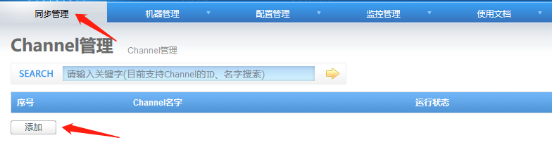
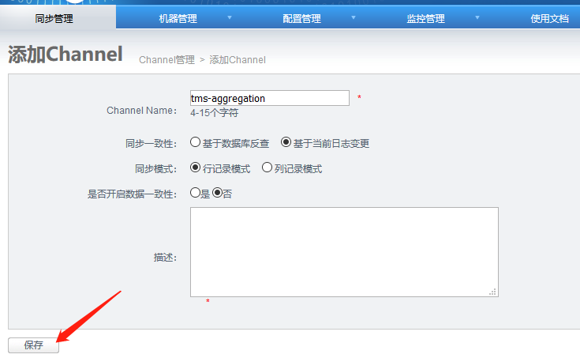
xxxxxxxxxx行记录模式：如果目标库中不存在记录时，执行插入。列记录模式：变更哪个字段就同步哪个字段，在双A同步时，为减少数据冲突，建议使用此选项。（双A只的是双主、且会同时修改同一条记录）
4.5 添加pipeline
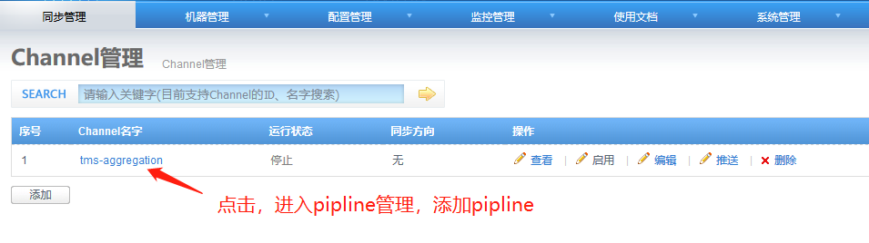
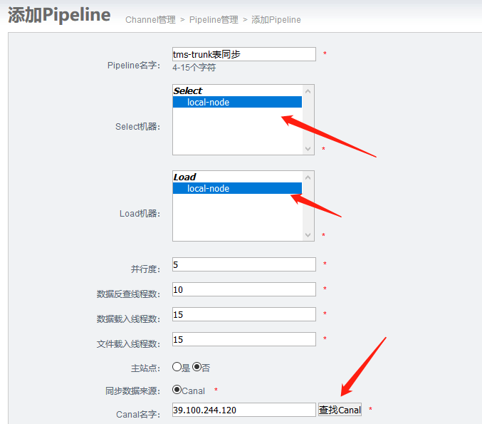
pipeline参数
- 并行度. ==> 查看文档：Otter调度模型，主要是并行化调度参数.(滑动窗口大小)
- 数据反查线程数. ==> 如果选择了同步一致性为反查数据库，在反查数据库时的并发线程数大小
- 数据载入线程数. ==> 在目标库执行并行载入算法时并发线程数大小
- 文件载入线程数. ==> 数据带文件同步时处理的并发线程数大小
- 主站点. ==> 双Ａ同步中的主站点设置
- 消费批次大小. ==> 获取canal数据的batchSize参数
- 获取批次超时时间. ==> 获取canal数据的timeout参数
pipeline 高级设置
- 使用batch. ==> 是否使用jdbc batch提升效率，部分分布式数据库系统不一定支持batch协议
- 跳过load异常. ==> 比如同步时出现目标库主键冲突，开启该参数后，可跳过数据库执行异常
- 仲裁器调度模式. ==> 查看文档：Otter调度模型
- 负载均衡算法. ==> 查看文档：Otter调度模型
- 传输模式. ==> 多个node节点之间的传输方式，RPC或HTTP. HTTP主要就是使用aria2c，如果测试环境不装aria2c，可强制选择为RPC
- 记录selector日志. ==> 是否记录简单的canal抓取binlog的情况
- 记录selector详细日志. ==> 是否记录canal抓取binlog的数据详细内容
- 记录load日志. ==> 是否记录otter同步数据详细内容
- dryRun模式. ==> 只记录load日志，不执行真实同步到数据库的操作
- 支持ddl同步. ==> 是否同步ddl语句
- 是否跳过ddl异常. ==> 同步ddl出错时，是否自动跳过
- 文件重复同步对比 ==> 数据带文件同步时，是否需要对比源和目标库的文件信息，如果文件无变化，则不同步，减少网络传输量.
- 文件传输加密 ==> 基于HTTP协议传输时，对应文件数据是否需要做加密处理
- 启用公网同步 ==> 每个node节点都会定义一个外部ip信息，如果启用公网同步，同步时数据传递会依赖外部ip.
- 跳过自由门数据 ==> 自定义数据同步的内容
- 跳过反查无记录数据 ==> 反查记录不存在时，是否需要进行忽略处理，不建议开启.
- 启用数据表类型转化 ==> 源库和目标库的字段类型不匹配时，开启改功能，可自动进行字段类型转化
- 兼容字段新增同步 ==> 同步过程中，源库新增了一个字段(必须无默认值)，而目标库还未增加，是否需要兼容处理
- 自定义同步标记 ==> 级联同步中屏蔽同步的功能.
4.6 添加映射关系表
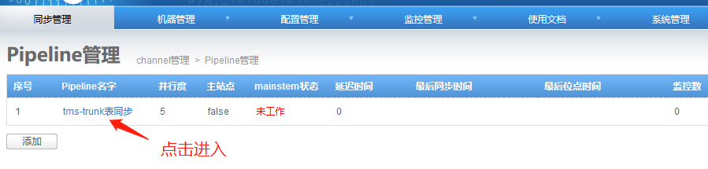
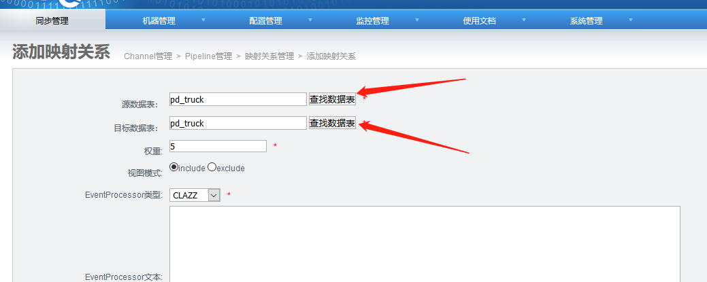
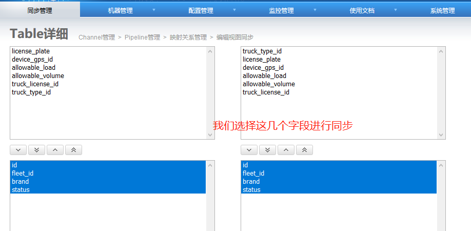
添加完成：
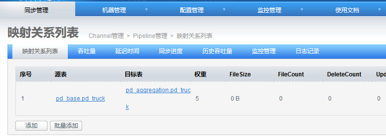
4.7 测试验证
启动channel
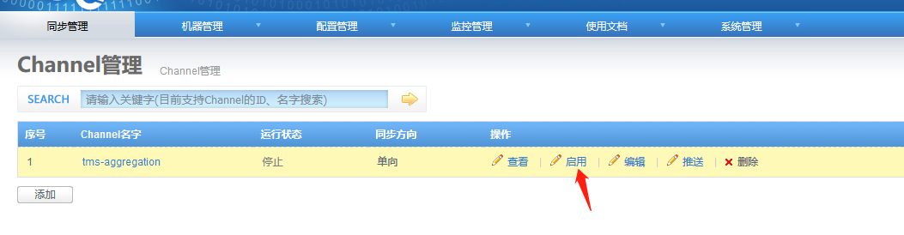
在源表中插入条记录，数据同步到目标表中。
5. 数据聚合服务介绍
数据聚合微服务，对应的maven工程为pd-aggregation。数据聚合微服务提供TMS中各种作业、单据、任务的集中查询功能。数据聚合服务对应操作的数据库为pd_aggregation，库中的表和数据都是通过otter从其他库同步过来的。